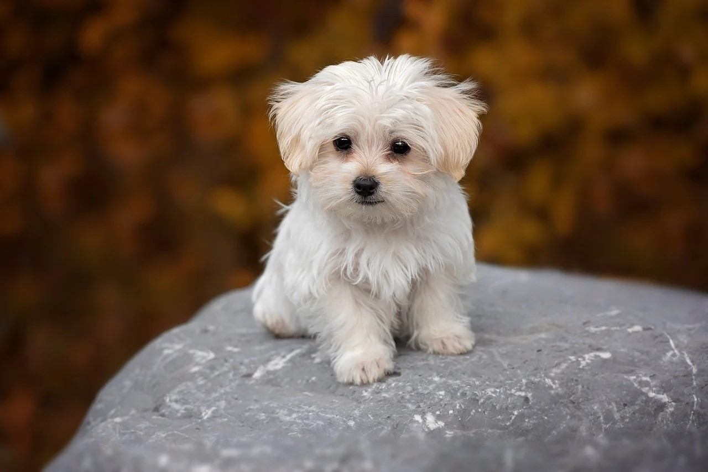
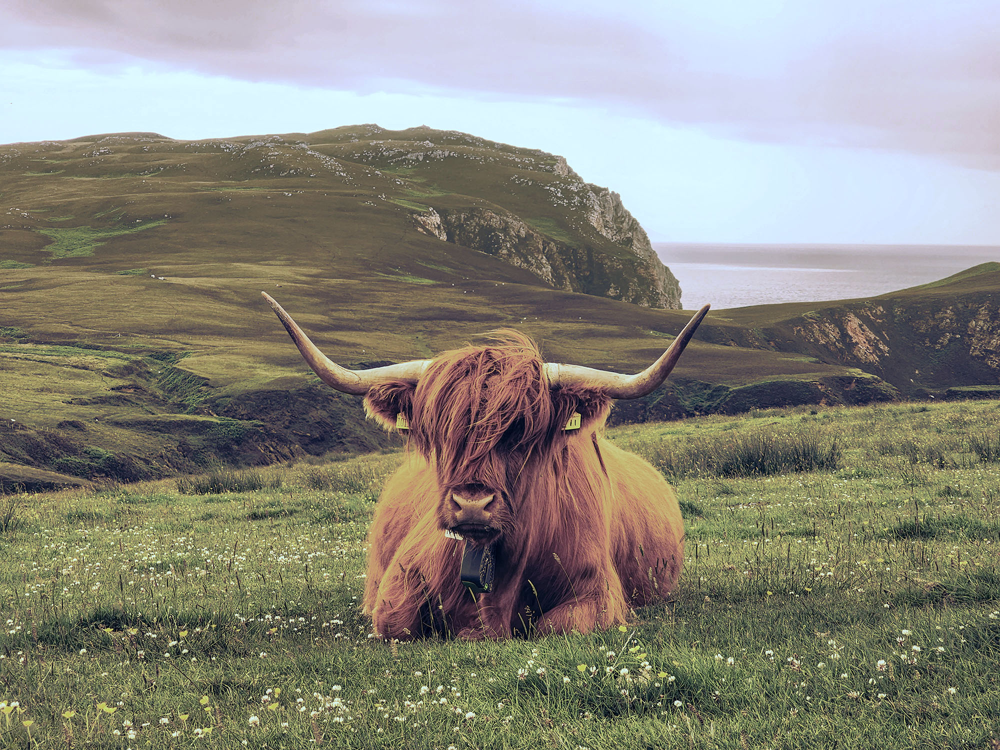
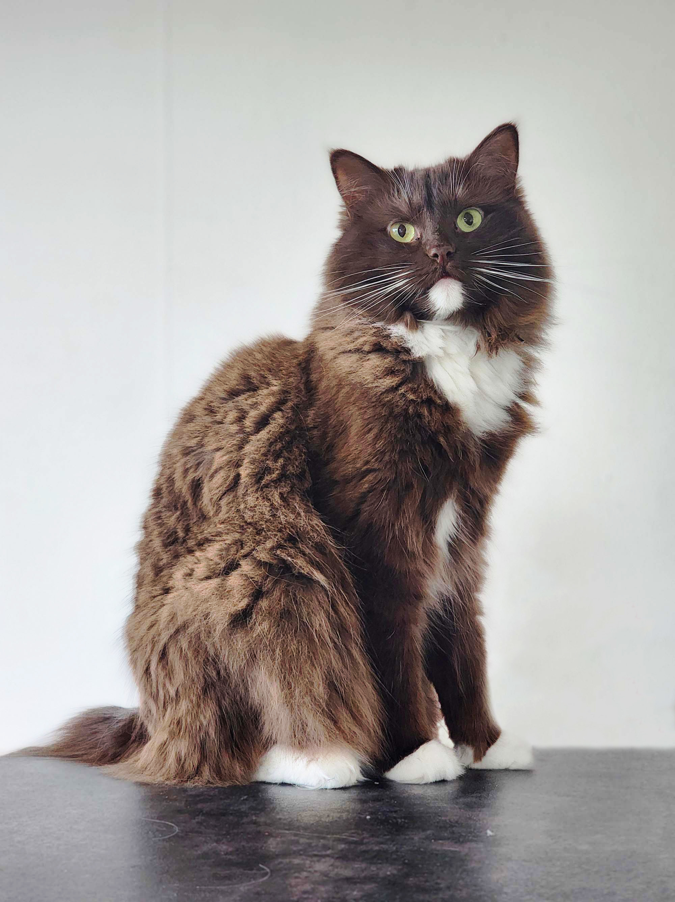
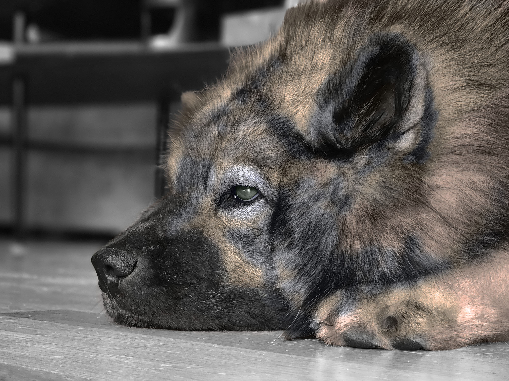

Djur i ett nytt perspektiv
En bildserie med färger, ljus och sammanhang i fokus.
Om uppgiften
I den här uppgiften har jag bildbehandlat en serie bilder som alla hade olika problem, till exempel fel ljus, för varma färger och störande objekt. Målet var att bilderna skulle se bra ut var för sig och samtidigt kännas som en enhetlig serie tillsammans.
Jag har bland annat använt ljusbalans, exponering, färgkorrigering, borttagning av objekt och färgläggning. På sidan Bildredigering kan du se tre av bilderna före och efter.
De program jag har använt för uppgiften
- Adobe Photoshop
- Adobe Illustrator
Bildserien
-

-

-
